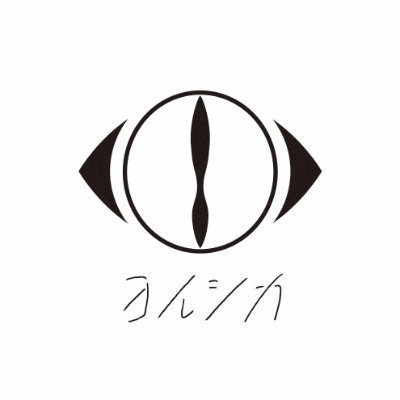

ここは趣味を紹介するページです。
私の趣味は音楽を聴くことです。何か作業する時や移動の際は基本的に音楽を聴きながら作業したり、移動したりします。
では、最近私が聴いているアーティストを3名（グループ）程ご紹介します。興味があれば是非聴いてみてください。
初めにEveについて紹介します。
Eveはシンガーソングライターで2009年からインターネットを中心に活動していました。
Eveの代表曲は以下の通りになります。
| 曲名 | 公開日 | 詳しい内容 |
|---|---|---|
| ドラマツルギー | 2017年10月 | アルバム「文化」に収録されており、ドラマ「フォローされたら終わり」の主題歌にも起用されています。 |
| 廻廻奇譚 | 2020年10月 | アルバム「廻人」に収録されており、アニメ「呪術廻戦」の1期オープニングに起用されています。 |
| お気に召すまま | 2017年11月 | アルバム「文化」に収録されており、youtubeの再生回数は1億回を突破しています |
| 心予報 | 2020年2月 | アルバム「smile」に収録されており、 |
次にヨルシカについて紹介します。

ヨルシカはコンポーサーとしても活動しているn-buna氏がワンマンライブにゲストボーカルとしてヨルシカの代表曲は以下の通りになります。
| 曲名 | 公開日 | 詳しい内容 |
|---|---|---|
| ただ君に晴れ | 2018年5月 | アルバム。 |
| 春泥棒 | 2020年10月 | アルバム「廻人」に収録されており、アニメ呪術廻戦の1期オープニングに起用されています。 |
| 言って。 | 2017年6月 | アルバム「文化」に収録されており、youtubeの再生回数は1億回を突破しています |
| だから僕は音楽をやめた | 2019年4月 | アルバム |
最後にサカナクションについて紹介します。
サカナクションは2005年に北海道札幌市で結成されたロックバンドでボーカルの山口一郎氏の他に
岩寺基晴氏（ギター）と草刈愛美氏（ベース）岡崎英美氏（キーボード）江島啓一氏（ドラム）の5名で構成されています。
サカナクションの代表曲は以下の通りになります。
| 曲名 | 公開日 | 詳しい内容 |
|---|---|---|
| 新宝島 | 2017年10月 | アルバム |
| 怪獣 | 2020年10月 | アルバム「廻人」に収録されており、アニメ呪術廻戦の1期オープニングに起用されています。 |
| ミュージック | 2017年11月 | アルバム「文化」に収録されており、youtubeの再生回数は1億回を突破しています |
| アルクラウンド | 年月 | アルバム |